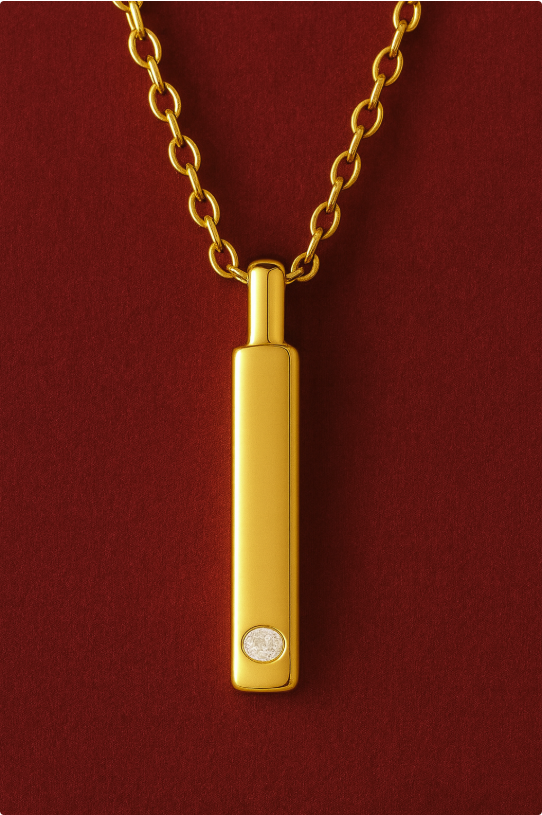
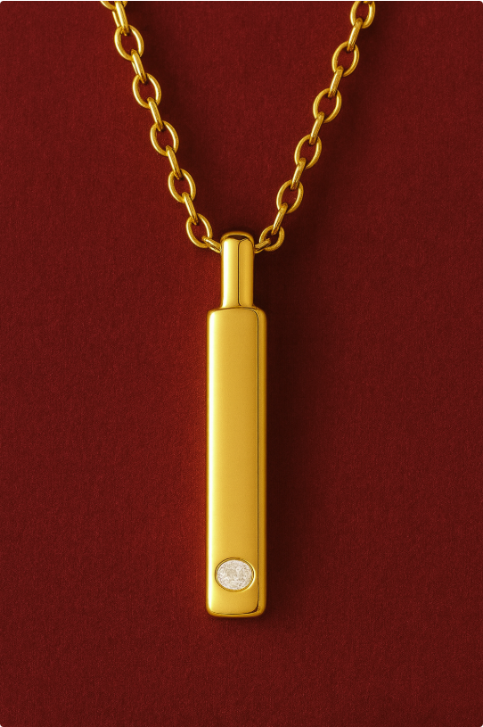

Concepts
At Kool Concepts, creativity never stops. Beyond what we manufacture today, our team is constantly developing fresh ideas and forward-thinking designs that anticipate where the market is headed. These potential concepts are born from our ongoing research, trend analysis, and in-house design innovation. They are explorations of what jewelry could look like tomorrow—blending artistry, cultural shifts, and commercial viability.
By sharing these concepts, we invite our clients to see what’s possible—to imagine new product lines, seasonal drops, or capsule collections that push boundaries while staying true to consumer demand. Whether it’s bold statement pieces, symbolic designs with deeper meaning, or playful motifs reimagined for modern wearers, these ideas showcase the breadth of what our team can envision and bring to life.
At Kool Concepts, potential isn’t just theoretical—it’s the starting point for the next big trend.
Modern Heirlooms
Your Story, In Stone
Heirlooms are often passed down — worn by mothers, grandmothers, and generations before.
But few collections ask a deeper question: Where do heirlooms begin?
Modern Heirlooms is a jewelry collection for the woman who wants to be the beginning.
This proposal was born from a new generation’s desire to celebrate their own defining moments —
not just with fashion, but with forever pieces that hold meaning.
From quiet victories to bold beginnings, this line transforms modern milestones into personal treasures.
It’s not about status.
It’s about sentiment.
It’s not about waiting to inherit.
It’s about choosing to begin.
Why Now?
Women today are choosing themselves — celebrating promotions, healing journeys, fresh starts, and personal growth.
Modern Heirlooms offers her a way to mark those moments — beautifully and meaningfully.
This is jewelry for a new kind of legacy: Not inherited — created.
Collection Details:
| Category | Product Names | Emotional Role | Notes |
|---|---|---|---|
| Trilogy Rings | Mother Stone Rings | Honoring past, present, and future |
Trio of contrasting diamonds |
| Necklace | Memory Bar Necklace | One stone for every year that changed you |
A slim, horizontal bar pendant set with a diamond to symbolize growth over time |
Key Design Elements Across the Collection:
Minimalist Foundations
Clean, architectural silhouettes that feel timeless yet modern — easily stackable or layered, with a nod to quiet luxury.
Universal Milestone Themes
While not explicitly labeled, the pieces align with key occasions:
- -First job or promotion
- -Recovery or Solo Milestone
- -Birth of a child
- -Graduation or Rite of Passage
- -Remembrance or Transformation
- -Bridal or Commitment


 
